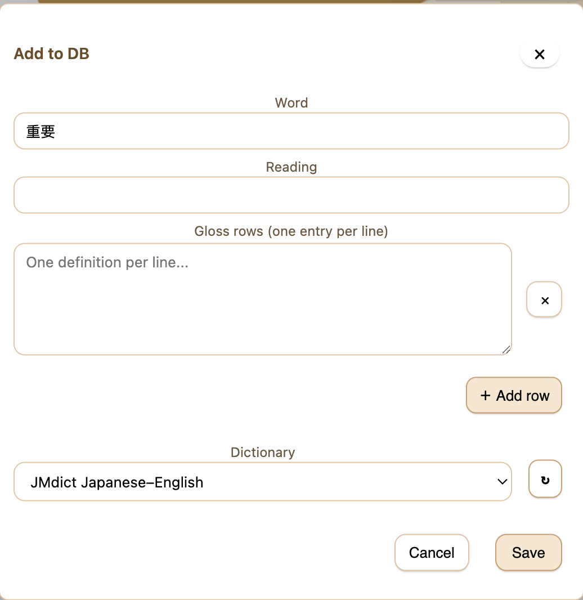

Add to DB
Setup & usage
Open a popup and click the + button in its top bar. You can also select text on a card and press Ctrl+Shift+A.
Check the word, add an optional reading, and enter one gloss per line. Use Add row when you need separate definition groups.
Choose an existing dictionary or Create new dictionary, enter its title, and click Save. The current lookup refreshes with the new entry.
In Anki
